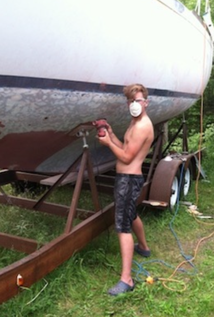
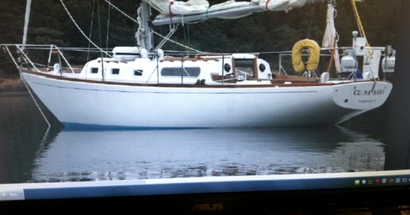
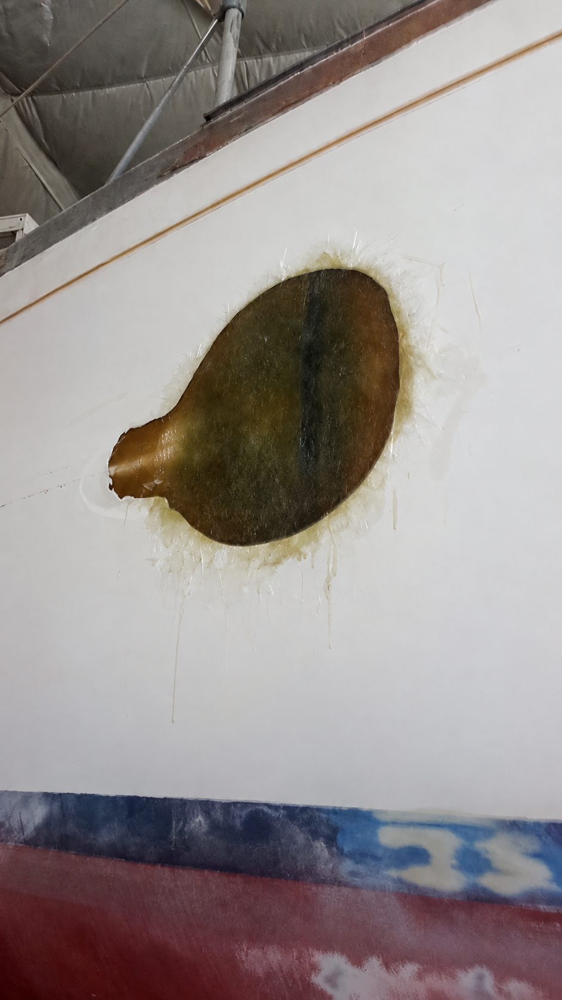
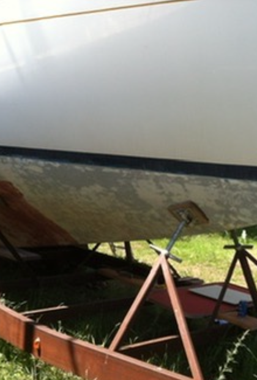
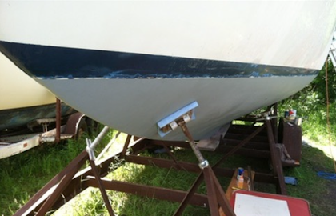
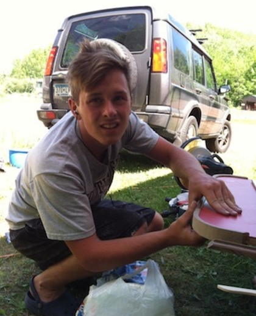
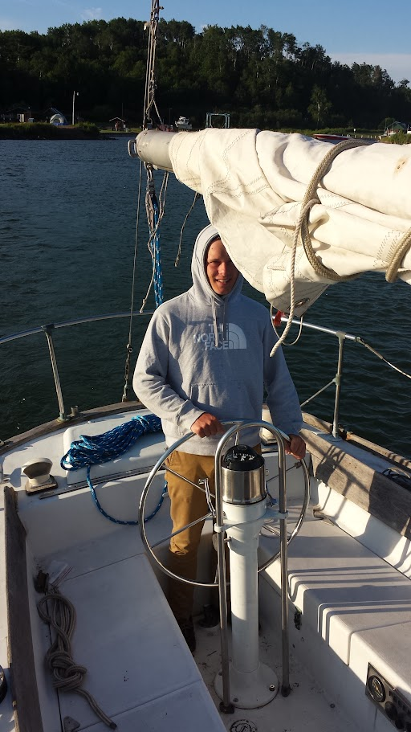
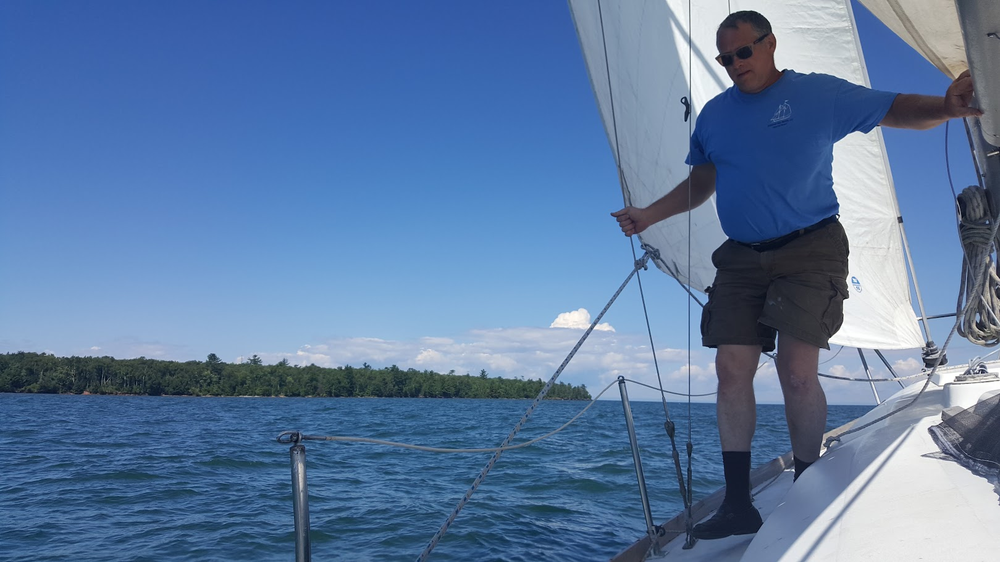

SAILBOAT RESTORATION • COMPOSITE REPAIR • FABRICATION
Morgan 34
Sailboat Restoration
Restoring a Hurricane Sandy salvage sailboat with my dad, including structural fiberglass repair, refinishing, fabrication, and the many smaller jobs required to get an old boat back on the water.
A lot of the restoration started with getting dirty.
My dad and I restored a 34-foot Morgan sailboat that had been purchased from a Hurricane Sandy salvage auction after sustaining significant hull damage. Doing much of the work ourselves made owning and restoring the boat possible.
The project became one of my earliest hands-on introductions to composite repair. At the time, I had no idea that composites would eventually become such a large part of my engineering career. I was simply learning how to solve problems on a boat that we wanted to sail again.

Removing old bottom coatings during the restoration.

THE BOAT
A salvage project worth taking on.
This photo is from the original listing, before the boat was damaged in Hurricane Sandy. My dad later found the Morgan 34 at a salvage auction with significant hull damage.
Restoring it ourselves made a boat like this financially possible for us. It also became one of my earliest hands-on experiences with fiberglass repair, fabrication, and learning how to solve problems as they appeared.
Rebuilding damaged fiberglass structure by hand.
One of the largest repairs involved removing damaged fiberglass and tapering the surrounding laminate to prepare a large scarf repair. I helped grind and prepare the repair area and rebuild the hull using fiberglass reinforcement and wet layup techniques.
I do not have photographs from the wet layup itself, but the image here shows the completed laminate before the area was fully faired and refinished.

Completed fiberglass repair before final fairing and finish work.
Most of the work was not glamorous.
Restoring the hull meant long stretches of stripping, sanding, grinding, fairing, surface preparation, and refinishing. Those jobs were less interesting than the finished boat, but they were a large part of what it took to get there.


There was always another small problem to solve.
The restoration went well beyond the hull repair. I also worked on smaller fabrication and refit projects throughout the boat, including interior pieces and steering-related work.


Sailing was one of my first connections to engineering.
This project happened years before I knew composite manufacturing would become a major part of my professional life. Looking back, it was one of the first experiences that showed me how much I enjoyed using technical and hands-on skills to make something possible that otherwise would have been out of reach.
It also gave me an appreciation for the less polished side of sailing: fixing things, getting dirty, learning as you go, and eventually seeing the boat move under sail again.

Back on the water. The payoff for all of the sanding, grinding, repair work, and smaller refit projects.